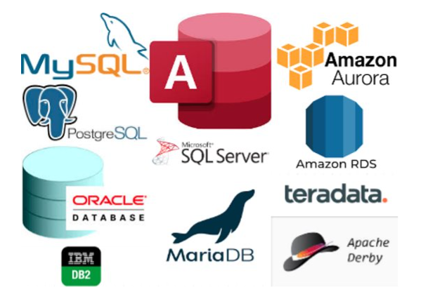

sql_101
Introdução ao SQL
O que é SQL?
SQL significa Structured Query Language.
O que é query?
É uma solicitação (consulta) feita ao banco de dados para recuperar, manipular ou inserir dados.
Voltando a pergunta inicial: O que é SQL?
É uma linguagem case-insensitive, i.e., ignora o fato das letras serem minúsculas ou maiúsculas no código.
E é utilizada para gerenciar dados em bancos de dados relacionais.
O que é banco de dados relacional?
É um tipo de banco de dados que armazena dados em tabelas organizadas em linhas e colunas.
O que é tabela?
Uma tabela contém um conjunto de colunas (campos), que representam os atributos dos dados, e cada linha representa um registro contendo os valores dos atributos para aquele registro.
O que é uma linha?
A linha representa um registro e dita a unidade daquela tabela, é MUITO importante entender o que a tabela representa no banco para entendermos os registros.
O que é uma coluna?
A coluna representa um atributo daquela tabela, normalmente representando uma característica do registro linha, as colunas podem ter alguns tipos, como:
INT: usado para armazenar números inteiros, positivos ou negativosFLOATeDOUBLE: usados para armazenar números decimais ou de ponto flutuanteCHAReVARCHAR: usados para armazenarstringsde caracteres, como nomes, endereços e descrições. Para referência deste tipo de valor é necessário usar os símbolos de aspas simplesDATEeTIME: usados para armazenar datas e horáriosBOOLEAN: usado para armazenar valores dicotômicos verdadeiro/falso
Os tipos tem operadores específicos como veremos futuramente. Além disso, no banco é possível configurar restrições para cada coluna, como:
Limite de caracteres
Não aceitar um determinado valor
Estar sempre preenchido
E como as tabelas se relacionam?
Para as tabelas se relacionarem é necessários existem campos entre elas que permitam os vínculos, normalmente são utilizados dois tipos de campos, as chaves primárias e estrangeiras.
O que é chave primária?
Uma chave primária (primary key) é um campo ou conjunto de campos em uma tabela que identifica unicamente cada registro na tabela.
A chave primária é usada para garantir a integridade dos dados e para permitir a ligação ou relacionamento entre tabelas.
O que é chave estrangeira?
Uma chave estrangeira (foreign key) é um campo ou conjunto de campos em uma tabela que se relaciona com a chave primária de outra tabela.
A chave estrangeira é usada para estabelecer um relacionamento entre duas tabelas. Ela garante que os dados em uma tabela estejam vinculados aos dados em outra tabela.
SQL é único?
Sim e não, a norma ISO/IEC 9075, também conhecida como SQL:2016, é um padrão internacional que define a sintaxe e semântica da linguagem SQL.
A norma SQL estabelece uma série de regras e especificações que garantem que os comandos SQL funcionem da mesma maneira em diferentes sistemas de gerenciamento de banco de dados.
Logo, existem padrões universais a serem seguidos, porém fora estas regras é possível criar diferentes flavors de SQL.

Alguns exemplos que temos em nossos sistemas:
TGC = Firebird
ECO (Web) = PostgreSQL
ECO (Coletor) = SQlite
Automação (Tablet) = SQLite
Todos são regidos pelos conceitos universais de SQL, porém terão funções específicas e algumas sintaxes diferentes.
Além disto, alguns são tecnologias open-source (PostgreSQL), e outros são pagos (T-SQL).
O que contempla o SQL?
Vimos que o SQL é uma linguagem, porém dentro do SQL temos algumas classificações de comandos e uso, as mais comuns são:
DDL
Do inglês Data Definition Language, é a linguagem de definição de dados que permite criar, modificar e excluir objetos de banco de dados, como tabelas, índices, visões e procedimentos armazenados. Exemplos de comandos DDL são CREATE, ALTER e DROP.
Esses comandos são usados para definir a estrutura de um banco de dados, incluindo a criação de tabelas, definição de chaves primárias e estrangeiras, adição ou remoção de colunas, entre outros.
DML
Do inglês Data Manipulation Language, é a linguagem de manipulação de dados que permite inserir, atualizar e excluir dados em uma tabela. Exemplos de comandos DML incluem SELECT, INSERT, UPDATE e DELETE.
Esses comandos são usados para inserir, atualizar ou excluir dados em uma tabela existente. Eles permitem que você selecione, filtre e modifique os dados armazenados em um banco de dados.
DCL
Do inglês Data Control Language, é a linguagem usada para controlar o acesso e as permissões aos dados armazenados em um banco de dados. Exemplos de comandos DCL incluem GRANT e REVOKE
TCL
Do inglês Transaction Control Language, é a linguagem usada para controlar transações em um banco de dados, incluindo operações de commit, rollback e savepoint.
Outras
DQL, do inglês Data Query Language
SCL, do inglês Session Control Language
CCL, do inglês Client Control Language
O que existe além de tabelas em um banco?
Schemas
Um schema permite agrupar e organizar um conjunto de objetos de banco de dados relacionais, como tabelas, visões, procedimentos armazenados, funções e outros elementos.
Basicamente ele rege o que e como estarão as entidas e componentes dentro de um banco.
Views
É uma consulta salva que é armazenada no banco de dados como um objeto.
A view é definida como uma tabela virtual, que é uma tabela que não possui dados físicos armazenados nela, mas que pode ser acessada como uma tabela real através de comandos SQL.
Procedures
É uma rotina de código SQL armazenada no banco de dados como um objeto que permite executar tarefas complexas, encapsular a lógica de negócios, e reutilizar esta lógica.
Functions
É similar a procedure, porém tem como objetivo primário retornar um valor e ser diretamente utilizadas nas consultas.
E como acesso um banco de dados?
Existem ferramentas de gerenciamento de banco de dados, como:
MySQL Workbench: é uma ferramenta de gerenciamento de banco de dados visual para MySQL. Ele permite criar e gerenciar bancos de dados MySQL, bem como projetar e executar consultas.
pgAdmin: é uma ferramenta de gerenciamento de banco de dados visual para PostgreSQL. Ele permite gerenciar bancos de dados PostgreSQL, bem como projetar e executar consultas.
Oracle SQL Developer: é uma ferramenta de gerenciamento de banco de dados visual para o Oracle Database. Ele permite criar e gerenciar bancos de dados Oracle, bem como projetar e executar consultas.
A ferramenta de recomendação da empresa é o Dbeaver, ela é uma ferramenta de código aberto que suporta dezenas de bancos de dados diferentes. Alguns dos motivos de uso são:
O DBeaver oferece recursos avançados de gerenciamento de banco de dados, como criação e gerenciamento de bancos de dados, projeto e execução de consultas, gerenciamento de usuários e permissões, além de importação e exportação de dados.
Ele também possui uma interface de usuário intuitiva e personalizável, permitindo que os usuários ajustem a aparência e o comportamento da ferramenta de acordo com suas preferências.
O DBeaver é compatível com vários sistemas operacionais, incluindo Windows, macOS e Linux, e pode ser usado tanto por desenvolvedores quanto por administradores de banco de dados.
Além disso, ele possui uma grande comunidade de usuários e é frequentemente atualizado com novos recursos e melhorias.
Estas ferramentas são auxiliares, ou seja, não afetam em nada a escrita das consultas, o que muda entre elas?
Formas de visualização dos dados e afins
Formas de exportação
Conectores para diferentes bancos
Entre outras funções relativas ao uso geral do banco
Existem bancos não-relacionais?
Sim, também conhecidos como bancos de dados NoSQL (Not Only SQL).
Eles utilizam outros modelos de dados, distintos da relação entre tabelas, como: documentos, grafos, chave-valor, colunas amplas, entre outros.
Cada modelo tem suas próprias características e é otimizado para diferentes tipos de aplicação e necessidades de armazenamento e consulta de dados.
Alguns exemplos:
MongoDB: um banco de dados de documentos que armazena os dados em documentos JSON com campos e valores.
Cassandra: um banco de dados de colunas amplamente utilizado para armazenamento em larga escala e alta disponibilidade de dados distribuídos.
Couchbase: um banco de dados de documentos e chave-valor distribuído, que oferece alta disponibilidade, escalabilidade e desempenho.
Redis: um banco de dados em memória que armazena os dados como pares chave-valor, sendo amplamente utilizado para caching e gerenciamento de sessão.
Neo4j: um banco de dados de grafos que armazena os dados em grafos, permitindo a modelagem e consulta de relacionamentos complexos entre os dados.